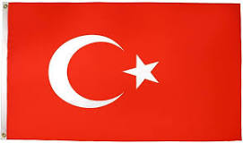
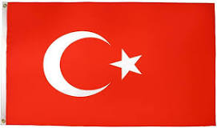
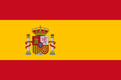
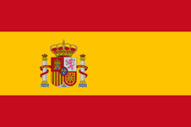
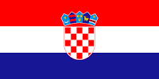
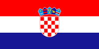
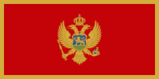
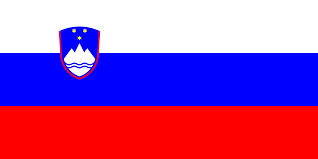
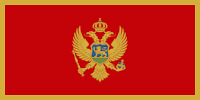
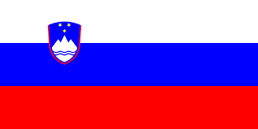

Gorazde, a hero city in eastern Bosnia, the only BiH city on the Drina that managed to defend itself in the last war, and today a true small economic miracle.
For a long time, this small town flourished as a stop on the trade route that led from Serbia and Montenegro to Sarajevo. The Drina is a favorite place for swimming and rafting, so cafes and restaurants on the banks of the river are always full.
South of Gorazde is one of the largest medieval cemeteries in the country. It is assumed that there are about 600 medieval tombstones in one cemetery on the hillside.

 


 

 

 


